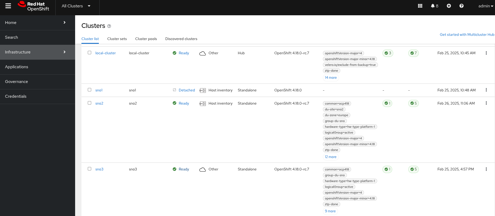
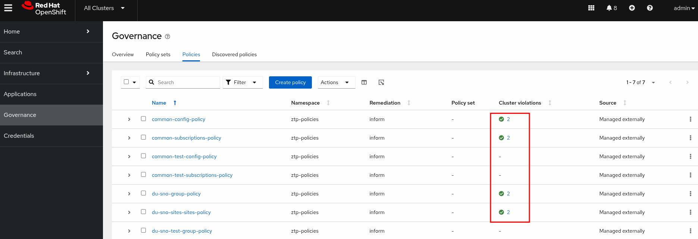

Check SNO Deployment is Finished
In the previous section we have learned how to follow the cluster deployment process, but the cluster finished its deployment doesn’t mean that the SNO deployment is complete.
We say that the SNO deployment finished when the SNO cluster has been deployed and day2 configurations have been applied. In this section we will learn how to verify that the configs have been applied and our sno-abi is ready to run 5G RAN workloads.
Check SNO Deployment has Finished via the WebUI
-
Access the RHACM WebUI and login with the OpenShift credentials.
-
Once you’re in, click on
Infrastructure→Clusters. You will see a screen like the one below, notice that there is a label sayingztp-donefor the SNO ABI cluster (that means ztp pipeline has finished):
-
Additionally, we can verify that all policies are compliant for our
sno-abicluster and also the image-based installedsno-ibi. On the RHACM WebUI go toGovernance→Policiesand you will see the following screen where we can see all policies are green:Applying policies on sno-abican take up to 15 minutes after cluster has been fully deployed.Notice that the sno-ibi node was already deployed and configured with the telco RAN DU profile previously in Deploying an Image Based Install Cluster. So it is ready to run telco CNF applications as well.

See that the policies in the Governance section are also compliant for the sno-ibicluster even they were not applied via RHACM Policies. They were included in the seed image that was used to provision it and afterwards executed the reconfiguration process using the configuration ISO. -
At this point the
sno-abiis ready to run 5G RAN workloads too.
Check SNO Deployment has Finished via the CLI
| Below commands must be executed from the workstation host if not specified otherwise. |
-
Check the
ManagedClusterfor SNO ABI cluster (including its labels). You should see theztp-donelabel, just as we saw in the WebUI.oc --kubeconfig ~/hub-kubeconfig get managedcluster sno-abi --show-labelsNAME HUB ACCEPTED MANAGED CLUSTER URLS JOINED AVAILABLE AGE LABELS sno-abi true https://api.sno-abi.5g-deployment.lab:6443 True True 122m <OMITTED_LABELS>,ztp-done= -
Check the policies are compliant for our SNO cluster.
oc --kubeconfig ~/hub-kubeconfig -n sno-abi get policiesApplying policies on sno-abican take up to 15 minutes after cluster has been fully deployed.NAME REMEDIATION ACTION COMPLIANCE STATE AGE ztp-policies.common-config-policies inform Compliant 74m ztp-policies.common-subscription-policies inform Compliant 74m ztp-policies.du-sno-group-policies inform Compliant 74m ztp-policies.du-sno-sites-sites-policy inform Compliant 74m -
At this stage both
sno-abiandsno-ibiOpenShift Single-Node clusters are ready to run 5G RAN workloads.